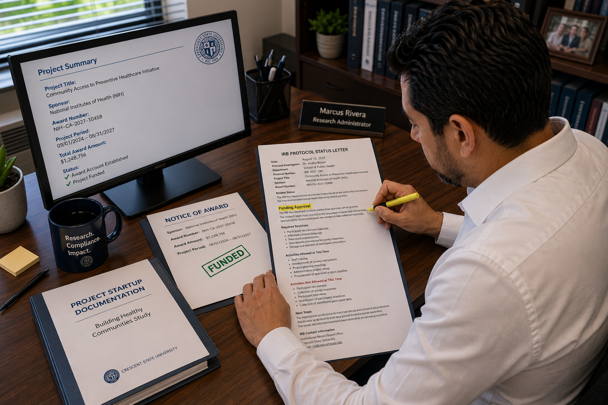
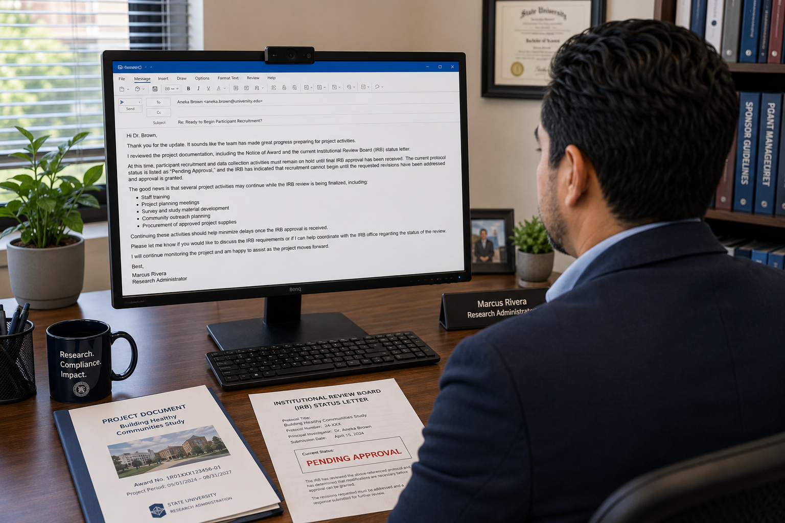

Dr. Brown checks in
Dr. Brown emails Marcus after the kickoff meeting. The team feels prepared, the award account is active, and she wants to confirm whether recruitment can start the following week.
Event 01
Dr. Brown is ready to begin participant recruitment. Marcus needs to confirm whether the project can move forward before final IRB approval is in place.
Story Scene
The NIH award has been received, and Marcus has completed the award setup. The project account exists. The team has held its kickoff meeting. Staff training is underway, and Dr. Brown is eager to begin recruitment.
From Dr. Brown’s perspective, the project is ready. The funding has been awarded, the team has prepared, and Year 1 goals are already on the clock.
But Marcus knows that post-award management is not only about whether money is available. It is also about whether the required approvals are in place before certain activities begin.
Marcus’s question is simple but important: Can participant recruitment begin before final IRB approval has been received?
Visual Story
This quick visual walkthrough shows the administrative sequence behind the decision: a request comes in, Marcus checks the project record, and the response is based on what the documentation allows.
Dr. Brown emails Marcus after the kickoff meeting. The team feels prepared, the award account is active, and she wants to confirm whether recruitment can start the following week.

Marcus reviews the project documentation and discovers that the IRB protocol status is still pending.

Marcus explains that recruitment and data collection must wait until final IRB approval is received.
Trigger Document
Hi Marcus,
I hope you're doing well.
The project team has completed our kickoff meeting, and we are eager to begin participant recruitment next week.
We have finalized the survey instrument, completed staff training, and identified several community organizations that are willing to assist with outreach efforts.
Because the project is already funded and our award account has been established, I would like to begin recruiting participants as soon as possible so we can stay on schedule with our Year 1 project goals.
Can you confirm whether there are any remaining administrative requirements before we begin recruitment activities?
Thank you for your help.
Best,
Dr. Aneka Brown
Principal Investigator
Community Access to Preventive Healthcare Initiative
School of Public Health
Crescent State University
Compliance Artifact
Dr. Brown’s email tells Marcus that the project team feels ready to begin recruitment. But Marcus cannot rely only on the team’s readiness or the fact that the award account has been established.
Before responding, Marcus reviews the compliance record. The most important document is the IRB protocol status letter issued three days before Dr. Brown’s email.
The IRB has completed its initial review, but the project has not yet received final approval. That status determines what can and cannot happen next.
Crescent State University
Human Research Review Committee
Document: IRB Protocol Status Letter
The Institutional Review Board has completed its initial review of the above-referenced protocol. At this time, the protocol has been assigned the status of Pending Approval.
The IRB has requested revisions before final approval can be granted. The research team must respond to the requested revisions and receive final approval prior to initiating human participant recruitment or data collection activities.
The Principal Investigator must submit responses to all requested revisions. The protocol will be reviewed upon receipt of the revised materials. Final approval will be communicated through a separate approval letter.
Artifact Review
Before Marcus replies to Dr. Brown, he does what a research administrator is expected to do: he checks the award record, compares the request against sponsor and compliance requirements, and documents the basis for his response. He is not relying on memory or guessing. He is reviewing the project file.
Marcus starts with the Notice of Award because it is the official sponsor document that confirms the award terms. It tells him what was funded, when the project period begins and ends, who is responsible, and whether any special conditions apply.
Marcus then checks the award terms for restrictions. In this case, the award includes a condition that human participant recruitment may not begin until all required Institutional Review Board approvals have been obtained.
This is the key issue: the project can be funded and the account can be active, but recruitment still cannot begin if the required approval is missing.
Marcus compares Dr. Brown’s request with the IRB status letter. The letter shows that the protocol is still pending approval and that recruitment and data collection are not yet allowed.
Marcus needs this confirmation before he responds, because his answer must be based on the current compliance record.
This is a core part of post-award research administration. Marcus is helping the project move forward, but he also has to protect the award, the institution, the research participants, and Dr. Brown’s project record.
A quick “yes” could allow the team to begin unapproved human subjects activity. A documented review allows Marcus to give a clear answer: some startup activities may continue, but recruitment and data collection must wait for final IRB approval.
Administrator Thinking
Dr. Brown is not doing anything wrong. She is trying to keep the project moving and stay on schedule. But her email assumes that funding and account setup may be enough to begin recruitment.
Marcus needs to separate two issues:
Marcus’s role is not to stop the project. His role is to help the project move forward responsibly.
Decision Point
Based on the award condition and the need for human subjects approval, what should Marcus tell Dr. Brown?
Correct Administrative Action
Key Takeaway
Receiving an award does not automatically authorize all project activities. Compliance requirements may delay portions of the project even after funding has been awarded.
Resources
These are the kinds of official rules, sponsor policies, and institutional documents that support Marcus’s decision. A post-award research administrator does not respond based only on what the team wants to do. The response must be grounded in the award terms, compliance status, institutional policy, and federal requirements.
This regulation explains why research involving people requires additional protections before participant recruitment, consent, interviews, surveys, or identifiable data collection can begin.
Connection to Event 01: recruitment and data collection cannot begin until human subjects requirements are satisfied.
This sponsor policy helps define the expectations attached to NIH-funded awards, including award conditions, recipient responsibilities, and compliance obligations.
Connection to Event 01: the award is funded by NIH, so sponsor terms and conditions matter.
This institutional policy explains how Crescent State University reviews, approves, documents, and monitors human subjects research before the research team begins working with participants.
Connection to Event 01: the IRB status letter says the protocol is pending approval.
This federal requirement helps frame the institution’s responsibility to maintain processes that prevent federally funded activity from moving forward before required approvals are complete.
Connection to Event 01: Marcus is helping prevent project activity from moving ahead before required approvals are in place.
This federal cost principle explains why costs charged to an award must be necessary, reasonable, allocable, consistently treated, documented, and compliant with applicable requirements.
Connection to Event 01: costs tied to unapproved recruitment or data collection may create compliance concerns.